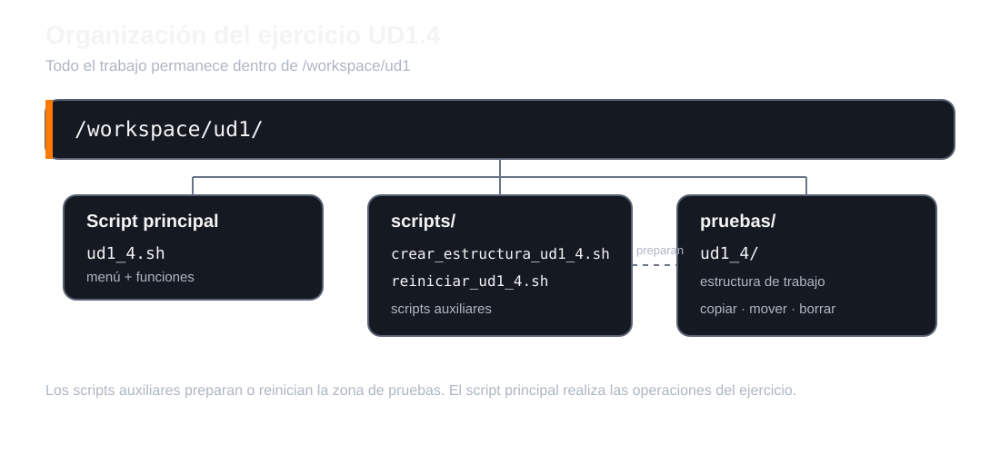

UD1.4 · Scripts y gestión de estructuras¶
En este ejercicio vas a construir un pequeño entorno de trabajo utilizando Bash. Practicarás rutas absolutas y relativas, creación de directorios y ficheros, copias, movimientos, borrado, funciones y un menú interactivo.
Entorno de trabajo
Todo se realiza desde el terminal integrado de VS Code y dentro de /workspace/ud1.
No trabajes directamente en otras rutas del sistema.
1. Organización del ejercicio¶
Vamos a separar el script principal, los scripts auxiliares y los ficheros de prueba.

La estructura general será:
/workspace/ud1/
├── ud1_4.sh
├── scripts/
│ ├── crear_estructura_ud1_4.sh
│ └── reiniciar_ud1_4.sh
└── pruebas/
└── ud1_4/
¿Para qué sirve cada parte?¶
| Ruta | Uso |
|---|---|
ud1_4.sh |
Script principal. Contendrá el menú y las operaciones del ejercicio. |
scripts/crear_estructura_ud1_4.sh |
Genera la estructura inicial sobre la que vas a trabajar. |
scripts/reiniciar_ud1_4.sh |
Permite borrar la prueba y volver a crearla para repetir el ejercicio. |
pruebas/ud1_4/ |
Zona de pruebas. Aquí se crean, copian, mueven y eliminan los ficheros. |
Regla importante
Todo lo que genere el ejercicio debe quedar dentro de /workspace/ud1. No utilices tu carpeta personal ni otras ubicaciones para resolverlo.
2. Script auxiliar: crear la estructura¶
Crea:
Este script debe crear automáticamente la siguiente estructura dentro de /workspace/ud1/pruebas/ud1_4:
ud1_4/
├── java/
│ ├── config/
│ │ └── WebSocketConfig.java
│ ├── models/
│ │ └── MessageModel.java
│ ├── views/
│ │ ├── popups/
│ │ │ └── RegisterPopup.xaml
│ │ └── panels/
│ │ ├── MainView.xaml
│ │ └── LoginView.xaml
│ └── controllers/
└── resources/
├── documentos/
├── img/
│ ├── logo.png
│ ├── btn1.png
│ ├── bt2.jpg
│ ├── bt3.jpg
│ └── bt4.png
└── application.properties
Los ficheros pueden estar vacíos. Lo importante es construir correctamente la estructura utilizando comandos de Linux.
Cuando termines, debes poder ejecutar:
y comprobar el resultado con:
3. Script auxiliar: reiniciar el ejercicio¶
Crea también:
Su objetivo será dejar el ejercicio preparado para empezar otra vez:
- Eliminar
/workspace/ud1/pruebas/ud1_4si existe. - Ejecutar
crear_estructura_ud1_4.shpara volver a generar la estructura inicial. - Mostrar un mensaje indicando que el entorno se ha reiniciado.
¿Por qué hacemos un script de reinicio?
Durante el ejercicio vas a borrar y mover ficheros. Poder reconstruir el escenario inicial con un solo comando te permitirá repetir las pruebas sin crear todo manualmente otra vez.
4. Script principal ud1_4.sh¶
Crea ahora:
El script mostrará este menú y permanecerá en ejecución hasta seleccionar Salir:
=============================
UD1.4
=============================
1. Ejecutar apartado 1
2. Reiniciar ejercicio
3. Mostrar estructura actual
4. Salir
Selecciona una opción [1-4]:
La opción 2 debe ejecutar el script auxiliar reiniciar_ud1_4.sh y la opción 3 debe mostrar con tree el estado actual de la zona de pruebas.
5. Función mostrar¶
Dentro de ud1_4.sh, crea una función llamada mostrar que reciba un argumento con la descripción de la última operación realizada.
Cada vez que se invoque debe:
- Limpiar la pantalla.
- Mostrar
OPERACIÓN:seguido del argumento recibido. - Mostrar la estructura actual de
/workspace/ud1/pruebas/ud1_4mediantetreey una ruta absoluta. - Realizar una pausa con
Pulsa una tecla para continuar....
Por ejemplo:
OPERACIÓN: Crear directorio ViewModels
ESTRUCTURA ACTUAL:
.
├── java
│ ├── ...
└── resources
└── ...
Pulsa una tecla para continuar...
6. Apartado 1¶
Crea una función apartado1. La opción 1 del menú debe llamarla y realizar las siguientes operaciones en este orden.
1. Crear ViewModels¶
Desplázate al directorio raíz / y utiliza una ruta absoluta para crear:
Después:
2. Crear MainViewModel.java¶
Utilizando una ruta absoluta, crea dentro de ViewModels:
Después:
3. Crear operations¶
Desplázate hasta:
Desde esa ubicación utiliza una ruta relativa para crear operations directamente dentro de ud1_4.
Después:
4. Copiar los JPG¶
Utilizando rutas relativas, copia dentro de operations todos los ficheros .jpg que se encuentran en resources/img.
Después:
5. Copiar config¶
Desplázate hasta ud1_4 y, utilizando rutas relativas, copia java/config y todo su contenido dentro de operations.
Después:
6. Borrar el config original¶
Utilizando una ruta relativa, elimina el directorio java/config original.
Después:
7. Borrar los PNG¶
Utilizando una ruta absoluta, elimina todos los ficheros .png de:
Después:
8. Recuperar config¶
Utilizando rutas absolutas, mueve el directorio config que copiaste en operations para volver a colocarlo dentro de java.
Después:
Al terminar, muestra un mensaje indicando que las operaciones se han realizado correctamente y vuelve al menú principal.
7. Comprobación¶
Antes de dar el ejercicio por terminado, comprueba:
- que el menú funciona y vuelve a mostrarse después de cada operación;
- que Salir finaliza el programa;
- que
crear_estructura_ud1_4.shgenera correctamente el escenario inicial; - que
reiniciar_ud1_4.shpermite repetir el ejercicio; - que has utilizado rutas absolutas o relativas exactamente donde se solicitan;
- que no has creado ficheros del ejercicio fuera de
/workspace/ud1.
Puedes ayudarte de:
8. Sincroniza el trabajo con tu repositorio¶
Cuando el ejercicio funcione, sincroniza los cambios con tu repositorio Git desde /workspace.
Primero comprueba qué has modificado:
Añade los cambios y crea un commit:
Finalmente, sincroniza tu repositorio remoto:
Antes del push
Revisa siempre git status. No subas archivos que no formen parte de tu trabajo.
Condiciones del ejercicio¶
- Debes utilizar Bash.
- Trabaja únicamente bajo
/workspace/ud1. - Respeta cuándo se solicita una ruta absoluta y cuándo una ruta relativa.
- Utiliza los comandos vistos en clase:
cd,pwd,ls,mkdir,touch,cp,mv,rm,clear,tree,echoyread. - El script principal debe utilizar funciones; como mínimo
mostraryapartado1. - El menú debe repetirse hasta seleccionar Salir.
- Debes crear y utilizar los scripts auxiliares indicados.
- El resultado final debe quedar sincronizado con tu repositorio Git.